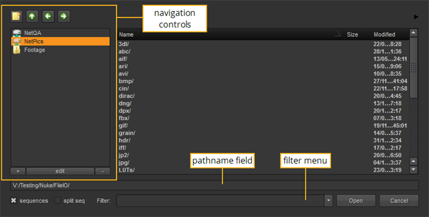
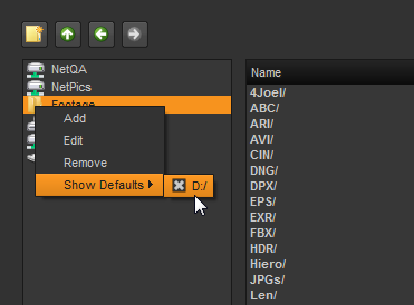
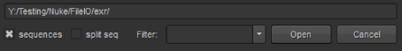

If you prefer to work with menus, you can also import clips using the file browser. You can import individual clip files, ranges, or entire folders, depending on the amount of media you intend to use.
Whenever you load or save files, a browser similar to the one shown below is displayed. The directory navigation buttons let you create or access the directory from which you wish to read or write data.

The navigation controls let you move through the directory structure, bookmark favorite directories, and create new directory folders.
NOTE: If you import folders, use the Import Options dialog to filter your ingest using inclusion and exclusion parameters, separated by spaces. The dialog's Include patterns field defaults to {supportedfiles}, which resolves to a list of all known supported file extensions. To add your own custom extensions to this, you can use {supportedfiles} *.ext (replacing .ext with your custom file extension).
Windows only: You can show/hide the drives that Windows auto creates by right-clicking the required drive, selecting ShowDefaults, and checking or unchecking the drive.

• Click the Create New Directory button  to create a new directory at your current position in the file hierarchy.
to create a new directory at your current position in the file hierarchy.
• Click Up one directory to go up one directory closer to the root.
to go up one directory closer to the root.
• Click Previous directory to go back one directory.
to go back one directory.
• Click Next directory to go forward one directory.
to go forward one directory.
• Click the + button to add a directory bookmark.
• Click the edit button to edit the name or path name to a bookmark.
• Click the - button to remove a directory bookmark.
The path name field displays the current directory path, lets you navigate to a new path, and also enter a file name for scripts and rendered images.

• To navigate to a directory, type the path name in the field.
• To enter a script name, browse to a directory path and enter the file name after the displayed path.
• To limit the file list to specific file types, use the filter dropdown menu and Sequences checkbox.
• Select *.nk to display only Nuke script files.
• Select * to display all files (except hidden files), regardless of what they’re associated with.
• Select .* * to display all files, including hidden files.
• Select */ to display directory names, but not their contents.
• Check sequences to display image sequences as single titles, as in fgelement.####.cin 1-50 rather than fgelement.0001.cin, fgelement.0002.cin, fgelement. 0003.cin, and so on.
NOTE: File sequences with no file extension (for example, fgelement.0001, fgelement.0002, fgelement.0003, and so on) are not displayed as single titles the first time you view the directory in the File Browser. However, they are displayed as single titles once you have navigated to another directory and back again.
NOTE: By default, the application may not be able to display custom file extensions (for example, .cext) as single titles. To fix this, you can register your custom file extension as a sequence type using Python:
1. Create a file called init.py in your plug-in path directory if one doesn’t already exist. For more information on plug-in path directories, see Loading Gizmos, NDK Plug-ins, and Python and Tcl Scripts.
2. Open the init.py file in a text editor and add an entry in the following format (replacing cext with your custom file extension):
nuke.addSequenceFileExtension("cext")
• You can also split incomplete sequences into separate Read nodes using the split seq checkbox.
| 1. | Click the black arrow in the top-right corner of the file browser. |

The file browser expands to include a small viewer.
| 2. | Select the file you want to preview in the file browser to view it. |

| 1. | Browse to the folder where the files are located. |
| 2. | Ctrl+click on all the files you want to open to select them (Mac users Cmd+click). |
| 3. | You can open files from multiple directories by clicking Next and browsing to the next file location. |
| 4. | Click Open. |
All the selected files open.
|
|